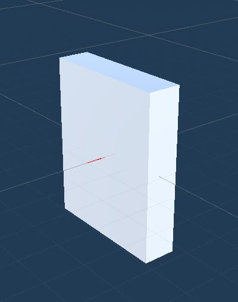
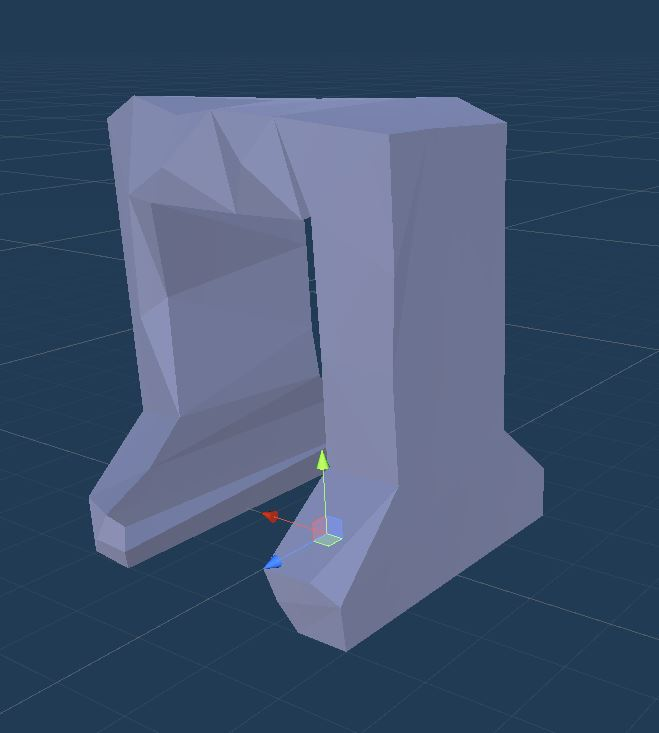
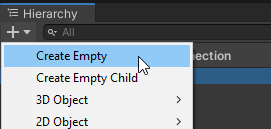

A Connection is a stitching point that the Snap framework uses to join rooms together. A connection contains a reference to a Door asset and a Wall asset.
If two rooms are stitched together through this stitching point, a door will be displayed in that position, otherwise the empty space will be walled off by the specified Wall asset
This will create a snap connection prefab asset that you can open and customize
Customize Connection Asset
Select the newly created snap connection asset and click Open Prefab from the inspector tab
After you've opened the snap connection prefab, you'll see that it is setup like this:
You will place your wall assets under the Wall game object and the door assets under the Door game object
Dungeon Architect will take care of automatically showing the appropriate game object (wall or door) and hide the other one
Setup Wall Asset
In this example, we'll use a simple cube as a wall. Create a new cube mesh from the create menu
Parent this cube under the Wall game object.
We need the wall to be 4 units wide and 5 units tall (to cleanly cover up the gap we created in our modules previously)
Select the cube mesh and set the scale to (4, 5, 1)

The wall should be moved appropriately so that:
The red line is at the bottom-center of the wall
The wall should be behind the red line's origin point
Move the wall up and a bit back by setting the location to (0, 2.5, -0.5)
Setup Door Asset
There's a simple Door prefab that comes bundled with the samples. We'll use that here, however, feel free to use your own door prefabs
Navigate to Assets\CodeRespawn\DungeonArchitect_Samples\DemoBuilder_GridFlow\Art\Prefab and drop in the DoorLarge prefab under the Door game object
Go ahead and hide the Wall game object. Dungeon Architect will take care of making it visible where needed

The rules for aligning the door with the red line are a bit different
You should move the door asset so that:
The red line is at the bottom-center of the door
The origin point of the red line should be at the center of the door
Our door prefab is already of the correct size (5 units tall and 4 units wide) and the pivot is in the right position. So reset the transform of the DoorLarge game object
You'd want your door asset to be twice as thick as the walls. This is because when two adjacent modules are stitched together, we have two walls from each modules and a door that is twice as thick as the walls will cleanly fill up the gap
Setup One-way Door Asset
Some doors will be promoted to one-way doors. This is done so that the player doesn't bypass a locked door and enter through another nearby door. You'll need to provide a door prefab that opens only from one way
Right now, the snap connection is setup to support a Door and a Wall. We are going to add support for a one-way door.
Create a new game object and name it OneWayDoor. This should stay alongside the Door and the Wall prefabs

Select the DoorOneWay game object and reset the transform
Let the SnapConnection know that this game object represents a one-way door. Select the root SnapConnection game object and inspect the properties
We'll assign our newly created DoorOneWay game object here
We can now place our one-way door assets under this. Navigate to Assets\CodeRespawn\DungeonArchitect_Samples\DemoBuilder_GridFlow\Art\Prefab and drop in DoorLargeOneWay prefab as shown below
The alignment rule of a one-way door is similar to a door. The direction in which we are allowed to go through the door should follow the red line outwards
Reset the transform of the asset and rotate it along Y by 180 degrees since it is facing the wrong way
Hide the Door and DoorOneWay game objects
Our snap connection is now complete and we are ready to place them in our snap modules
Exit out of the snap connection prefab and return to the scene by clicking the Scene button on the viewport
Place Connections on Modules
It's now time to use this snap connection on our modules
Open up the Room_1x1A module prefab we created earlier
Open the Grid and Snap window so we can align our snap connections correctly. Navigate to Edit > Grid and Snap Settings
Move over to one of the doors in the module prefab
Drag and drop the snap connection and align the snap connection origin point in the blue door position. Make sure the red line points outward
The position and rotation might be off by a slight margin. Select the snap connection actor and click All Axes button on the Grid and Snap window and it should cleanly snap at the door position